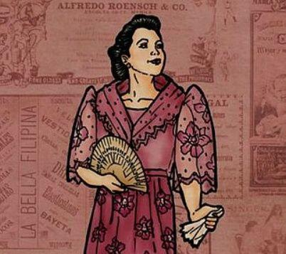

After Father Damaso left, Father Salvi was then assigned as the town curate of San Diego
Was once accused by Ibarra for ordering the transferring of Don Rafael's body and then denied any involvement in this, proclaiming it was his predecessor, Father Damaso
He is not in good terms with the alferez
Elias
He was born from a rich family and has a twin sister, they were from Manila
He then met Salome, who is now his sweetheart
Because he felt indebted to Ibarra, he warned him something bad may happen and that his life may be in danger
Capitan Tiago
Believed to be the father of Maria Clara
His father is an only son, and a sugar miller, from Malabo
When Ibarra returned from Europe, he hosted a party to welcome him
Don Rafael Ibarra
The father of Crisostomo Ibarra
Falsely accused for killing someone, was imprisoned,, and died there before his trial due to grief
Before his death, he was richest man in San Diefo
Pilosopo Tasyo or Don Anastacio
He is a scholar who lives in San Diego, although, he is usually seen as a lunatic
He was a very passionate student, he spent so much time into studying, so much so that he ran out of money due to buying books
Due to his knowledge, he had also predicted that they would persecute him for it
Sisa
She is the mother of two sons, Crispin and Basilio
The day after All Saints' Day, she went out to get Crispin, only to find that he was missing and that her two sons were wanted
Because she is a kind and submissive woman, her husband takes advantage of that and abuses her
Crispin
During All Saints' Day, they were blamed for stealing 2 pieces of gold by the mayor
Because they were accused of stealing, the sacristan mayor came and started beating them up
Crispin was not able to escape
Basilio
After the sacristan mayor started beating them, Basilio was able to flee
Before arriving home, he was nearly shot by the Guardia Civil and then was comforted by his mother, Sisa
Soon later, in his dream, Father Salvi and the mayor of Sacristan beat and killed Crispin.
Donya Victorina de Espadaña
She, and her husband Don Tiburcio sought to gain more status by associating themselves with those of high status as well
She mainly wanted to marry Don Tiburcio due to his last name
She strongly desires to act or be like a Spaniard, because of this, she only speaks Spanish
Don Tiburcio de Espadaña
The husband of Don Victorina
A Spaniard who came to the Philippines in order to make money
Despite having no training in being a doctor, he charged people highly for his servies

Donya Consolacion
Before marrying the alferez, she used to be a laundrywoman
Despite not speaking it well, she always speaks Spanish
She often wears makeup and sees herself very highly
Alferez
The husband of Donya Consolacion
Leader of the civil guards
Because of his rivalry with Father Salvi, the alferez often makes petty attempts to make or annoy him by beating up those who work under Father Salvi
Tiya Isabel
Helped raise Maria Clara
Because Pia Alba died while giving birth to Maria Clara, she was like a second parent to her because she had always been there for Maria Clara